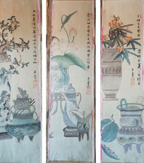
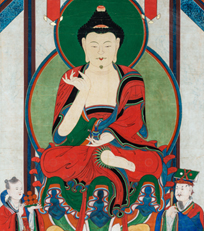

재단은 2012년 7월 설립 이후 국외소재문화재 중 문화재적 가치가 크거나 불법 · 부당반출 가능성이 의심되는 문화재를 발굴하여
재단이 직접 또는 관계기관과 협의를 통해 47건 785점을 국내로 환수 조치하였습니다. [2022. 8. 1. 기준]
백자철화이성립묘지
환수일자 : 2022. 9. 27.
환수경로 : 기증(일본)
시 기 : 조선, 17세기 말(1686년 이후)
형 태 : 백자 / 2점 각 22.8x18x1.6㎝
현소장처 : 한국국학진흥원
조선 중기 무관 이성립(1595-1662)의 묘지. 17세기 후반 무관의 생활사를 살피는 데 중요한 자료. 2점의 완질로 구성되었으며, 묘지가 분리되지 않게 끈으로 묶기 위한 구멍이 뚫린 점 등 제작 방식이 특수하다.
유성룡비망기입대통력<경자>
환수일자 : 2022. 9. 8.
환수경로 : 매입(일본)
시 기 : 조선, 1599년 간행(1600년 필사)
형 태 : 종이에 인쇄 / 38x20㎝
현소장처 : 국립고궁박물관(임시 보관)
선조 33년(경자(庚子), 1600)의 책력. 관상감 철활자로 찍은 인쇄본이며, <경자년 대통력(大統曆)> 자체가 국내에 현전하지 않는 희소 자료인 데다 유성룡의 수택본으로, 추후 보물 <유성룡 종가 문적>에 추가 지정될 가능성이 높다.
재미동포 김대영 소장품
환수일자 : 2022. 7. 22.
환수경로 : 기증(미국)
시 기 : 삼국시대~현대
형 태 : 회화, 도자, 공예 등 61건
현소장처 : 세종시립민속박물관
정선 산수화, 안중식 병풍, 김기창 판화 등 근현대 주요 작가들의 회화, 도자, 공예 작품 총 61건 69점. 대한민국 정부 수립 후 미주 이민 1세대의 한국 미술품 컬렉션의 경향과 특징을 파악할 수 있다.
보록
환수일자 : 2022. 7. 12.
환수경로 : 매입(영국) *라이엇게임즈 기부금 지원
시 기 : 조선, 19세기
형 태 : 목재, 가죽, 명주, 황동 / 23x23x27.5㎝
현소장처 : 국립고궁박물관
왕과 왕비에게 존호, 시호 등을 올리며 제작한 어보(御寶)를 보관하는 외함. 조선 왕실의 역사성과 궁중 공예품의 양식 및 재질이 변화, 발전하는 과정을 살펴볼 수 있는 자료로 연구 가치가 높다.
일영원구
환수일자 : 2022. 5. 20.
환수경로 : 경매 구입(미국)
시 기 : 조선, 1890년
형 태 : 동, 철 등 / 높이 23.8㎝, 구체 지름 11.2㎝
현소장처 : 국립고궁박물관
구형(球形)의 휴대용 해시계. ‘1890년 7월 상직현(尙稷鉉)이 제작했다’ 내용의 명문이 있으며, 조선시대 과학기술의 계승·발전상을 보여준다. 현존 유물 중 유사한 예가 없는 유물로 역사, 과학사, 금속공예 등 다방면에서 연구 가치가 높다.
자수화조병풍 낱폭
환수일자 : 2022. 5. 19.
환수경로 : 기증(영국)
시 기 : 1950년대(추정)
형 태 : 비단에 자수 / 167.3 x 37.2cm(대표 낱폭 크기, 4점 중 두 번째 장미와 포도)
현소장처 : 서울역사박물관
1950년대 후반부터 인사동에서 제작하여 인기리에 판매된 병풍 자수로 추정된다. 도안의 회화성 및 자수의 수준이 높고, 자수의 보존 상태가 좋다.
독서당계회도
환수일자 : 2022. 5. 3.
환수경로 : 경매 구입(미국)
시 기 : 조선, 1531년 경
형 태 : 비단에 수묵채색 / 화면 91.3x62.2cm, 전체 187.2x72.4cm
현소장처 : 국립고궁박물관
중종 연간 사가독서(賜暇讀書) 관리들의 모임 기록화. 현전하는 16세기 독서당계회도 3점 중 하나이자 실경산수에 기반한 계회도 중 가장 이른 시기 작품이자 수작. 참석자 명단과 계회 당시 관직명 등을 통해 제작연대를 알 수 있다.
열성어필
환수일자 : 2022. 5. 3.
환수경로 : 경매 구입(미국)
시 기 : 조선, 1722년-1725년
형 태 : 탑본(종이) / 표지 41.6x28.8㎝, 내지 41.1x28.3㎝
현소장처 : 국립고궁박물관
역대 왕의 위업을 기리고자 어필을 모아 엮은 책. 총 13묘 102면의 어필로 구성되었으며, 내사기(內賜記)와 추기(追記)를 통해 1722년 간본에 1725년 첨보분(添補分)이 합쳐진 것으로 확인되었다. 국내에 유존례가 드물고 보존 상태도 양호하다.
백자동채통형병
환수일자 : 2022. 5. 3.
환수경로 : 경매 구입(미국)
시 기 : 조선, 19세기 후반
형 태 : 백자 / 높이 18.1㎝
현소장처 : 국립고궁박물관
동채(銅彩)가 사용된 조선 말기의 통형병으로 희소성이 높다. 바닥면의 구 소장자(영국인 스탠리 스미스(1912~1917 조선 선교사로 활동) 정보가 담긴 스티커로, 조선 말기 한국문화재의 수집·유통 경로를 추정할 수 있다.
백자청화이기하묘지
환수일자 : 2022. 2. 8.
환수경로 : 기증(미국)
시 기 : 조선, 1734년
형 태 : 백자 / 총 18점 각 20.0x16.0x1.0㎝
현소장처 : 충청남도역사박물관
영조 연간 무신으로 활동한 이기하(1646-1718)의 묘지. 18장의 완질로 구성되어 있으며, 제작 연대(1734)가 확인되었다. 18세기 조선 백자 지석의 전형적인 사례로, 청화 발색이 선명하며 보존 상태가 매우 양호하다.
나전매조죽문합
환수일자 : 2021. 12. 28.
환수경로 : 매입(일본)
시 기 : 조선, 18세기
형 태 : 소나무에 흑칠, 자개, 동 / 36.0x36.0x11.3㎝
현소장처 : 국립고궁박물관
흑칠 바탕에 나전으로 사군자, 모란꽃 넝쿨, 화조문 등을 시문한 합. 유사 유물이 국내에 현전하나 그 수가 많지 않은 상황에서 문양의 표현과 자개의 질이 우수하고 보존 상태도 좋아 국내 전시 활용 가치가 높다.
백자청화김경온묘지
환수일자 : 2021. 12. 23.
환수경로 : 기증(일본)
시 기 : 조선, 1755년
형 태 : 백자 / 각 20.0x15.3x1.5㎝
현소장처 : 한국국학진흥원
영조 때 관직을 지낸 김경온(1692-1734)의 묘지. 5장의 완질로 남아 있으며, 묘지문은 백토로 만든 판에 청화안료로 쓰였다. 분원에서 사적(私的)으로 번조한 사실이 기록되어 도자사 연구 자료로 가치가 높다.
호렵도 팔폭병풍
환수일자 : 2020. 11. 6.
환수경로 : 경매 구입(미국)
시 기 : 조선, 19세기 전반
형 태 : 비단에 채색 / 화면 96.7x44.3㎝, 전체 154.7x49.0㎝(1폭 기준)
현소장처 : 국립고궁박물관
정교한 인물과 동물의 묘사, 공간 구성 및 세부 표현의 높은 완성도 등에서 김홍도 화풍을 잘 계승한 화원 작품으로 추정되며, 현전하는 호렵도 중 궁중화풍이 가장 두드러지는 수작이다. 이러한 화풍은 국내에 유존례가 희소하다.
앙부일구
환수일자 : 2020. 8. 24.
환수경로 : 경매 구입(미국)
시 기 : 조선, 1713년 이후
형 태 : 동합금에 은입사 / 전체높이 11.9㎝, 바깥지름 24.3㎝, 무게 4.49㎏
현소장처 : 국립고궁박물관
숙련된 장인에 의해 구사된 시각선과 계절선, 24절기의 정교한 은입사 기법, 다리의 구름과 용 문양 조각 등에서 예술성이 돋보이는 해시계로 수작이다. 조선시대 과학문화재는 실물 자료가 희소하다는 점에서 가치가 높다.
송광사 치성광여래도
환수일자 : 2020. 7. 21.
환수경로 : 경매 구입(영국)
시 기 : 조선, 1898년(추정)
형 태 : 비단에 채색 / 전체 113x151㎝, 화면 102.4x141.3㎝
현소장처 : 송광사
송광사 혹은 산내암자에 봉안되었던 후불탱화. 19세기 후반 전라도에서 활동한 송광사 출신 수화승 향호묘영과 차화승 용선천희의 화풍이 반영되어 있다. 이들은 조계산 송광사, 선암사 등 전라도 지방 사찰에서 많은 불화를 제작했다.
혼례용 단령
환수일자 : 2020. 2. 4.
환수경로 : 기증(독일)
시 기 : 1960년 전후
형 태 : 비단, 비스코스레이온(인조비단) / 길이 125.5cm 회장 76.0cm
현소장처 : 국립민속박물관
한국전쟁 이후 민간에서 착용했던 남성 혼례용 단령. 겉감은 모란 문양 비단, 안감은 비스코스레이온을 사용하였는데, 이는 1960년 전후에 주로 사용된 재질로 당시 사용된 혼례복으로 남아있는 사례가 드물어 희소가치가 있다.
나한도
환수일자 : 2020. 1. 16.
환수경로 : 경매 구입(미국)
시 기 : 조선 후기
형 태 : 비단에 채색 / 90.9x205.6㎝
현소장처 : 서봉사
총 4폭의 16나한도 중 4존의 나한이 그려진 한 폭. 화기는 남아있지 않으나 18세기 후반에서 19세기 전반 서울․경기 지역 화승들의 화풍과 관련된 것으로 보인다. 국내 현존하는 당시 나한도가 드물어 문화재적 가치가 높다.
재미동포 김대영 자료
환수일자 : 2020. 1. 13.
환수경로 : 기증(미국)
시 기 : 1939년~1960년대
형 태 : 문서 및 사진 등 개인기록물 자료
현소장처 : 서울역사박물관
재미동포 1세 김대영이 개인 소장한 기록물 329점. 특히 1950년대 서울지역 문화재급 고건축물 복구 기록 사진은 한국전쟁 직후 문화재 수리 상황을 파악할 수 있는 중요 자료로 사료적 가치가 높다.
나전국화넝쿨무늬합
환수일자 : 2020. 1. 10.
환수경로 : 매입(일본)
시 기 : 고려
형 태 : 나무, 흑칠, 나전, 금속선 등 / 길이 10.0㎝, 너비 6.0㎝, 높이 3.2㎝
현소장처 : 국립중앙박물관
나전칠기는 불화, 청자와 함께 고려시대를 대표하는 미술공예품이다. 전 세계에 남아있는 20여 점의 고려시대 나전칠기 중 온전한 송엽형 나전합은 단 3점으로, 전시, 연구, 전통기술 복원·재현 시 참고 자료 등 활용 가치가 매우 높다.
감지은니 묘법연화경 권5
환수일자 : 2019. 12. 19.
환수경로 : 매입(미국)
시 기 : 고려 말
형 태 : 감지에 은니(금니 변상 포함) / 1절면 27.6x9.7cm
현소장처 : 국립중앙박물관
감지에 금니로 변상도를 그리고 은니로 필사한 묘법연화경 7권 중 권5에 해당. 고려 말 사경의 기본적인 요소를 갖추고 있으며, 특히 14세기 후반의 특징적인 요소를 보이는 변상도와 표지화가 완벽하게 보존되어 있어 가치가 높다.
오륜행실도
환수일자 : 2019. 12. 19.
환수경로 : 매입(미국)
시 기 : 조선, 1797년
형 태 : 종이에 인쇄(정리자본) / 20.5x13.3㎝
현소장처 : 국립고궁박물관
1797년 왕명으로 『삼강행실도』와 『이륜행실도』를 합편하고 수정하여 간행한 책. 5권 4책 구성의 완질본으로, 당시의 높은 인쇄술 수준을 보여주며, 판화는 단원 김홍도 화풍이 반영되어 회화 자료적인 가치도 있다.
인장함
환수일자 : 2019. 12. 19.
환수경로 : 매입(미국)
시 기 : 조선
형 태 : 목재에 어피, 금속장식(철, 황동) / 높이 39, 길이 27.5㎝
현소장처 : 국립고궁박물관
앞면에 금속판을 오려 만든 글자 ‘추조인신(秋曹印信)’을 붙인 함. 추조는 형조의 다른 이름이며, 인장과 신표(信標)를 보관했을 것으로 추정된다. 용도를 분명히 알 수 있고, 국내에 잔존 사례가 희소하여 자료 가치가 높다.
삼강행실도
환수일자 : 2019. 12. 19.
환수경로 : 매입(미국)
시 기 : 조선, 16세기 초(추정)
형 태 : 종이에 인쇄(목판본) / 37x21.5㎝
현소장처 : 국립고궁박물관
충신, 효자, 열녀의 행실을 모아 만든 책. 현존하는 60여 종의 『삼강행실도』 이본(異本) 중 방점이 있는 10여 종에 속하는 귀중한 판본이며 보존 상태도 좋아 연구 및 활용 가치가 높다.
범어사 신중도
환수일자 : 2019. 10. 30.
환수경로 : 경매 구입(미국)
시 기 : 조선, 1891년
형 태 : 비단에 채색 / 146.1x144.8cm
현소장처 : 범어사
현전 사례가 거의 없는 19세기 후반 104위 신중도. 1891년 화승 민규(玟奎)가 제작한 불화로, 범어사 극락암에 봉안하였던 것으로 추정된다. 안정된 구도를 갖추고 있으며 존상의 표현이 우수하다.
고고유물
환수일자 : 2019. 10. 25.
환수경로 : 기증(미국)
시 기 : 청동기시대
형 태 : 석제 / 총 13점 5.1cm ~ 11.4cm
현소장처 : 국립중앙박물관
조선총독부박물관 유물 등록 방식의 번호 표기와 함께 일부 유물에는 한국의 지명(당동리, 옥석리)가 포함된 라벨이 부착되어 있다. 한국 고고학사에서 초기 자료이자 일제강점기 조선총독부박물관 등록 유물이라는 점에서 의미가 있다.
박정양(朴定陽) 친필 편지
환수일자 : 2019. 9. 2.
환수경로 : 기증(미국)
시 기 : 조선, 1888년
형 태 : 종이 / 20x24.8cm(편지지), 11.2x13.0cm(편지봉투)
현소장처 : 국립고궁박물관
초대 주미공사 박정양(1841-1905)이 서울의 미국인 군사 교관 존 G. 리에게 보낸 편지. 1910년 이전 미국 공관원이 남긴 현존 유일의 서한이다. 박정양의 개인기록인 『미행일기(美行日記)』 속 편지 발신 기록과도 일치한다.
중화궁인(重華宮印)
환수일자 : 2019. 6. 12.
환수경로 : 경매 구입(미국) *라이엇게임즈 기부금 지원
시 기 : 조선
형 태 : 동제 / 인면(印面) 7.2x7.2x6.7㎝
현소장처 : 국립고궁박물관
‘중화궁’에서 사용한 조선 왕실 인장. 서수(瑞獸) 모양의 손잡이에 인면(印面)에는 ‘重華宮印(중화궁인)’이 전서와 예서를 혼용한 독특한 서체로 조각되어 있다. 중화궁은 창덕궁 내에 있었던 것으로 추정된다.
백자 ‘이동궁명(履洞宮銘)’ 사각호
환수일자 : 2019. 6. 7.
환수경로 : 경매 구입(미국) *라이엇게임즈 기부금 지원
시 기 : 조선, 19세기
형 태 : 백자 / 높이 10.2㎝
현소장처 : 국립고궁박물관
분원 관요(官窯)에서 제작된 백자사각호. 바닥면에 ‘이동궁’이라는 명문이 있다. 이동궁은 정조의 딸 숙선옹주(1793-1836)의 궁가(宮家)로 추정된다. 문헌이 아닌 실물 자료로 ‘이동궁’이 나타난 사례는 극히 희소함.

변성규 작(作) 기명절지도
환수일자 : 2019. 5. 5.
환수경로 : 기증(독일)
시 기 : 20세기
형 태 : 종이에 채색 / 각 103x25.6cm
현소장처 : 국립현대미술관
근대 서화가 변성규(1890-1962)의 작품. 배접 없이 낱장으로 분리되어 있으나 병풍용으로 제작된 것으로 추정된다. 변성규는 근대 유명화가인 변종하(1926-2000)의 부친이다.
산수도
환수일자 : 2019. 5. 5.
환수경로 : 기증(독일)
시 기 : 20세기
형 태 : 비단에 옅은 색 / 각 114x31cm
현소장처 : 서울역사박물관
산수도 총 8점 중 1점에서 조선 말기 화원 화가인 조석진(1853-1920)의 서명과 인장을 찾아볼 수 있으나, 조석진의 작품으로 보기는 어렵다.
능행도 인쇄본
환수일자 : 2019. 5. 5.
환수경로 : 기증(독일)
시 기 : 20세기 전반
형 태 : 종이에 다색인쇄 / 총 6점 각 79.5x33.5cm
현소장처 : 서울역사박물관
한남서림이 1926년 제작·판매한 능행도 인쇄본(국립고궁박물관 소장)과 내용·형식이 거의 동일하며, 한남서림 1926년본과 같이 총 10폭으로 제작되었을 것이나 6폭만 남음. 궁중생활을 묘사한 인쇄본이 유통된 시대상을 보여준다.
척암선생문집 (拓菴先生文集) 책판
환수일자 : 2019. 4. 7.
환수경로 : 경매 구입(독일) *라이엇게임즈 기부금 지원
시 기 : 일제강점기, 1917년경
형 태 : 목판, 권9 23-24 / 19.1x48.3x2.0cm
현소장처 : 한국국학진흥원
조선 말기 대학자이자 의병장으로 대한민국 건국훈장 애국장에 추서된 척암 김도화(1825-1912) 선생의 문집. 동일 문집을 간행한 책판 중 국내에 소장된 19장은 유네스코 세계기록유산 <한국의 유교책판>에 포함되어 있다.
조선시대 문인석
환수일자 : 2019. 3. 22.
환수경로 : 기증(독일)
시 기 : 조선, 16세기 말~17세기 초(추정)
형 태 : 총 2점 각 131x40x32cm(87.82:1) / 123x37x37cm(87.82:2)
현소장처 : 국립민속박물관
16세기 말~17세기 초 조선 사대부 묘에 조성된 석물 한 쌍으로 판단되며, 조선시대 문인석 대부분이 입을 다문 엄숙한 형태인데 비해 한쪽이 입을 벌린 채 쌍을 이룬 매우 희귀한 사례로, 학술적, 조형적으로 가치가 매우 높다.
신흥사 제반문(諸般文) 경판
환수일자 : 2019. 3. 22.
환수경로 : 기증(미국)
시 기 : 조선, 17세기 중후반(추정)
형 태 : 목판 / 18x48.2cm(판 높이x너비), 27x58cm(마구리 포함)
현소장처 : 신흥사 *강원도유형문화재 제15호(1971.12.16. 지정)
사찰에서 수행했던 일상적 불교 의례를 기록한 경판 1매. 제반문 총 88장 중 제87장과 제88장이 양면에 판각되어 있다. 17세기 조선시대 인쇄술을 보여주는 자료이자, 6·25전쟁 직후 유실된 문화재의 자진 반환 사례로 의의가 크다.
1950년대 미군 촬영 기록사진
환수일자 : 2019. 3. 4.
환수경로 : 기증(미국)
시 기 : 1954년(추정), 소장자 촬영
형 태 : 35mm 컬러슬라이드 필름(종이 및 알루미늄 재질 마운트)
현소장처 : 속초시립박물관
한국전쟁 직후 민간의 생활상(의식주, 인물, 장터, 놀이 등)을 파악하고, 강원도 지역 주요 건축문화재(신흥사, 낙산사, 청간정 등)의 보존상태 등을 확인할 수 있는 역사자료로 학술적 가치가 크다. 총 279점.
독립운동가 송일성 자료
환수일자 : 2018. 11. 12.
환수경로 : 기증(미국)
시 기 : 20세기 중반(사진: 1945-1946년 경)
형 태 : 지류 / 사진 12x15cm, 명함 5x9cm
현소장처 : 독립기념관
독립유공자 송일성(1902-1994) 선생의 2녀 송숙희 여사가 기증한 독립운동사료 3점(사진 2점, 명함 1점). 백범 김구 선생이 충남 예산 방문 시 수행하는 사진 1점은 독립운동 역사가 해방 후 대한민국 행정까지 이어짐을 보여준다.
덕온공주 집안 한글자료 등
환수일자 : 2018. 11. 11.
환수경로 : 매입(미국)
시 기 : 19세기-20세기
형 태 : 종이에 수묵 등 / 크기 및 형태 다양
현소장처 : 국립한글박물관
조선 23대 왕 순조와 순원왕후의 셋째 딸인 덕온공주(1822-1844), 그 아들 윤용구(1853-1939), 손녀 윤백영(1888-1986) 등 왕실 후손 3대가 남긴 한글 책과 편지, 서예 작품 등 총 68점으로, ‘덕온공주가 한글로 쓴 자경전기’, ‘덕온공주가 한글로 쓴 규훈’ 등이 돋보인다.
덕온공주 동제인장(德溫公主 銅製印章)
환수일자 : 2018. 5. 31.
환수경로 : 경매 구입(미국)
시 기 : 조선, 19세기 전반
형 태 : 동제 / 인면(印面) 8.6x8.6, 전체 높이 9.5, 해치 높이 6.5㎝
현소장처 : 국립고궁박물관
조선 23대 왕 순조와 순원왕후의 셋째 딸이자 조선 왕조 마지막 공주인 덕온공주(1822-1844)의 인장. 국내에 유례가 극히 드문 공주 인장으로 연구 가치가 뛰어나다. 인장의 보존 상태가 양호하고 조각은 힘이 넘치고 당당함.
봉은사 시왕도
환수일자 : 2018. 5. 13.
환수경로 : 경매 구입(미국)
시 기 : 조선, 1777년
형 태 : 비단에 채색 / 117.2x117.2㎝
현소장처 : 봉은사
시왕을 4폭에 나누어 그린 4점의 시왕도 중 1점. 시왕도는 저승세계를 관장하는 10대 왕의 재판과 지옥에서 벌을 받는 망자들의 모습을 그린 그림이다. 1777년 서울·경기지역에서 활동한 화승 ‘인종’, ‘영인’, ‘도준’ 등이 그렸다.

운문사 칠성도
환수일자 : 2018. 4. 11.
환수경로 : 경매 구입(미국)
시 기 : 조선, 1868년(추정)
형 태 : 비단에 채색 / 129.5x74.3㎝
현소장처 : 운문사
북두칠성을 비롯한 하늘의 별들을 형상화한 칠성신을 그린 불화. 불교가 전통신앙을 흡수하는 과정에서 조성된 대웅전 뒤편 칠성각에 걸리는 그림이다. 운문사 칠성도는 화승인 ‘위상’과 ‘봉전’이 조성해 운문사에 봉안했다는 화기가 있다.
양봉요지
환수일자 : 2018. 1. 28.
환수경로 : 영구 대영(독일)
시 기 : 1918년
형 태 : 종이 / 19.1x12.1cm
현소장처 : 왜관수도원
카니시우스 퀴겔겐(1884-1964) 신부(한국명 구걸근(具傑根))가 1918년 서울 백동(지금의 혜화동) 성베네딕도회수도원에서 쓴 근대 서양 양봉기술 교육 교재. 한국에 근대 서양 양봉기술이 도입되는 과정을 보여준다.
조선시대갑옷
환수일자 : 2018. 1. 24.
환수경로 : 기증(독일)
시 기 : 조선 후기
형 태 : 면·가죽·금속 등/길이 101.02cm, 어깨 전장 99.0cm
현소장처 : 국립고궁박물관
조선 후기 보병들이 입었던 것으로 추정되는 면피갑. 면 안쪽에 가죽을 겹쳐 만든 갑찰을 이어붙여 외부의 공격으로부터 몸을 보호할 수 있게 했다. 조선시대 보병들이 입었을 엄청난 수량에 비해 국내에 남아 있는 사례가 많지 않아 희소성이 높다.
효명세자빈 책봉 죽책
환수일자 : 2018. 1. 20.
환수경로 : 경매 구입(프랑스) *라이엇게임즈 기부금 지원
시 기 : 조선, 1819년
형 태 : 대나무에 금속 /높이 25cm, 각 폭 너비 17.5cm, 전체 너비 102cm(총 6장)
현소장처 : 국립고궁박물관 *보물 지정 심의 중
1819년 효명세자빈(1808-1890)을 책봉할 때 수여한 조선 왕실의 의례 상징물. 크기, 재질, 서풍과 인각, 장식의 조각 등 모든 면에서 조선 왕실 죽책의 형식을 갖추었으며, 왕실 공예품으로 뛰어난 예술성을 보여준다.
강노 초상
환수일자 : 2017. 12. 8.
환수경로 : 경매 구입(미국)
시 기 : 조선, 1879년
형 태 : 종이에 채색 / 전체 91.2x64.0cm
현소장처 : 국립중앙박물관
조선 후기 문인화가 강세황(1713-1791)의 증손인 강노(1809-1886)의 초상화. 강노의 71세를 기념하여 1879년 9월에 그린 작품으로, 묘사가 매우 사실적이면서 인물의 고매한 인격과 정신이 잘 표현되어 있다.
옥천사 나한상
환수일자 : 2017. 12. 3.
환수경로 : 기증(미국)
시 기 : 조선 후기
형 태 :
현소장처 : 옥천사
깨달음을 얻은 불교의 성자 나한을 나타낸 상으로, 경남 고성군 옥천사 나한전에 모셔졌던 16나한 상 중 하나이다. 나무에 조각하고 채색하였으며 조선 후기 나한상 중 조각솜씨가 우수하다.
분청사기상감 ‘경태5년명(景泰5年銘)’ 이선제 묘지
환수일자 : 2017. 8. 22.
환수경로 : 기증(일본)
시 기 : 조선, 1454년
형 태 : 도자기 / 높이 28.7cm, 최대 너비 25.4cm
현소장처 : 국립중앙박물관 *보물 제1993호(2018.6.27. 지정)
세종 연간 집현전 관리를 지낸 이선제(1390-1453)의 묘지. 실존 인물 이선제의 생몰년과 묘지의 제작연대가 분명히 확인되고, 묘지 형태가 독특하여 학술적 가치가 매우 높다. 15세기 조선시대 분청사기 제작기법을 잘 보여준다.
석천암 지장시왕도
환수일자 : 2016. 7. 6.
환수경로 : 경매 구입(독일)
시 기 : 조선, 1848년
형 태 : 비단에 채색 / 154.8x148㎝
현소장처 : 불교중앙박물관
19세기 전반 지장시왕도의 우수한 예로 제작 시기와 제작자, 시주자(왕실 상궁과 고위관료들) 등의 정보가 담긴 화기(畵記)가 남아 있어 문화재적 가치가 높다. 수화승 ‘법총’의 작품이다.
범어사 극락암 칠성도
환수일자 : 2015. 7. 13.
환수경로 : 경매 구입(스위스)
시 기 : 조선, 1861년
형 태 : 비단에 채색 / 3폭 각 87.8x58.7cm
현소장처 : 범어사 성보박물관 *부산시유형문화재 제167호 (2015.11.18. 지정)
19세기 중후반 경남·전남 지역을 중심으로 활동한 화승 ‘선종’의 작품으로, 1861년 밀양 표충사에서 제작 후 범어사 극락암에 봉안되었다. 범어사 극락암 칠성도는 원래 11폭으로 구성된 불화이다.
선암사 동악당 재인대선사 진영
환수일자 : 2015. 6. 26.
환수경로 : 기증(미국)
시 기 : 조선, 1738년
형 태 : 비단에 채색 / 97x 65㎝
현소장처 : 선암사
17세기 후반에서 18세기 전반 선암사에서 활동한 것으로 추정되는 승려인 동악당 재인대선사를 그린 초상화. 제작 시기를 알 수 있는 가장 이른 시기의 진영(眞影)으로, 화승은 전라남도를 중심으로 활동한 ‘긍척’이다.
팔금강도
환수일자 : 2015. 6. 3.
환수경로 : 경매 구입(미국)
시 기 : 조선, 1767년
형 태 :
현소장처 : 직지성보박물관
‘팔금강(八金剛)’ 중 ‘벽독금강(辟毒金剛)’을 그린 그림. 작자로 추정되는 ‘유성’과 ‘자인’은 안동 봉정사 감로탱을 그린 조선 후기의 유명한 화사이다.
곽분양행락도
환수일자 : 2014. 4. 24.
환수경로 : 경매 구입(미국)
시 기 : 조선, 18세기 말~19세기 초 (추정)
형 태 : 나무·직물 / 165.9x388cm
현소장처 : 국립고궁박물관
당나라 곽자의(697-781) 집안의 연회 장면을 그린 그림. 곽분양으로도 불리는 그는 관료로서 성공하고 장수를 누리며 자손 또한 번창하여, 부귀영화를 누리는 인물의 상징이 되었다. 도화서 화원 화풍이 뚜렷하게 나타나는 가작이다.
석가삼존도
환수일자 : 2013.12.19.
환수경로 : 기증(미국) *라이엇게임즈 기부금 지원
시 기 : 조선, 1730년대 (추정)
형 태 : 비단에 채색 / 315x318.5㎝
현소장처 : 국립중앙박물관
가로·세로 각 3m가 넘는 조선 후기의 대형 불화로 대웅전의 후불탱화로 추정된다. 규모가 크고 등장인물의 표정 묘사가 매우 섬세한 수작이며, 특히 현존 불화 중 도상의 배치 등이 전례에 없고 희소하여 학술적 가치가 높다.